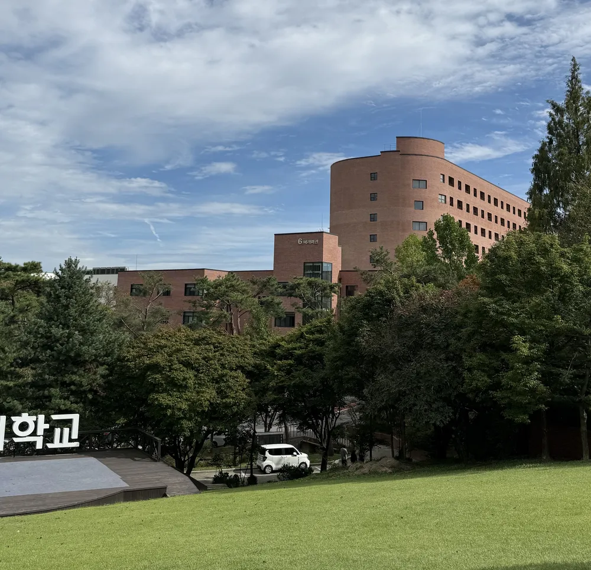

나에게 의미 있는 이유
오랫동안 화면을 보다가 밖으로 나오면 머리가 맑아지는 곳입니다. 같은 길도 날씨와 계절에 따라 색과 소리가 달라져서, 바쁜 날에도 잠깐 주변을 바라보게 해 주는 장소라는 점이 좋습니다.
위치
성심교정 안 학생미래인재관과 마리아관 주변에서 찾아갈 수 있는 야외 공간입니다.
관찰 포인트와 추천 활동
- 나뭇잎의 색, 바람의 세기, 들리는 소리를 하나씩 기록해 봅니다.
- 휴대전화를 잠시 넣어 두고 10분 정도 천천히 걸어 봅니다.
- 같은 위치를 다른 계절에 다시 촬영해 풍경의 변화를 비교해 봅니다.